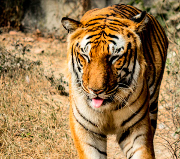

Tigre
da família dos felídeosSão animais extremamente territoriais e solitários. Classificado como um Superpredador, o tigre é o terceiro maior carnívoro terrestre, atrás apenas do Urso-polar e do Urso-de-Kodiak. É um dos animais mais carismáticos do mundo, sendo símbolo da conservação da natureza e um dos animais mais populares.
É um dos animais mais carismáticos do mundo, sendo símbolo da conservação da natureza e um dos animais mais populares.
É o felino com maior variação de tamanho do mundo entre subespécies, com o tigre-siberiano alcançando até 310 kg enquanto o tigre-de-bali alcançava no máximo 100 kg; tamanho comparável a suçuaranas e leopardos.
Parentes vivos mais próximos do tigre são o leão, leopardo e a onça-pintada, todos os quais são classificados sob o gênero Panthera. O mais velho parente extinto do tigre, chamado Panthera zdanskyi , foi encontrado na província de Gansu, noroeste da China.
“No coração do homem que controla seus pensamentos e emoções, nem sequer o tigre encontra espaço para introduzir suas garras ferozes.”
- Surgiu: 2.000.000 anos
- Tipo: Mamífero Carnívoro
- Idade Média: 10 anos
- Macho adulto: 200kg
- Fêmea adulta: 120kg
- Família: Felidae
Tigres têm corpos musculosos com membros anteriores poderosos, grandes cabeças, caudas longas e garras enormes. A pelagem é densa e pesada; a coloração varia entre tons de laranja e marrom com áreas ventrais brancas e listras pretas verticais distintas, cujos padrões são únicos para cada indivíduo.
Os tigres são os mais variáveis em tamanho de todos os grandes felinos, muito mais do que os leões. O tigre-de-bengala e o siberiano são os mais longos e pesados e, assim, considerados os maiores felinos selvagens vivos, classificando com o extinto tigre-do-cáspio entre os maiores que já existiram.